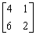

二階矩陣特徵多項式及特徵值
注意這個程式不能單獨使用，必須配合內置一元二次方程(I)同時使用。
程式編寫日期: 2006年4月13日
程式長度: 14步
注意輸入程式前請先按 SHIFT KAC 1 SHIFT Kin 1確保程式能順利輸入。
| B 1 | Kin 3 | +/- | Kin 2 | D 1 |
| ENT 1 | Kin × 4 | ENT 1 | Kin - 2 | Kin × 3 |
| 1 | Kin 1 | Kout 4 | Kin - 3 | MODE . |
例題: 計算下列矩陣的特徵多項式及特徵值。

按 P1 4 RUN 1 RUN 6 RUN 2 RUN
再按 1 FMLA (顯示1) RUN (顯示-6) RUN (顯示2) RUN (顯示5.64575) RUN (顯示0.35425)
所以特徵多項式為 x2 – 6x + 2 ，特徵值為5.64575及0.35425。